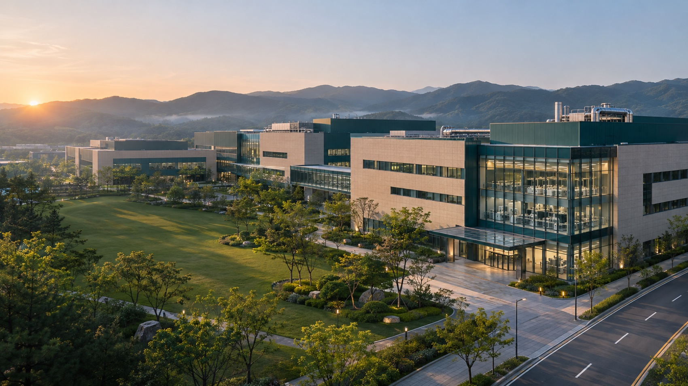
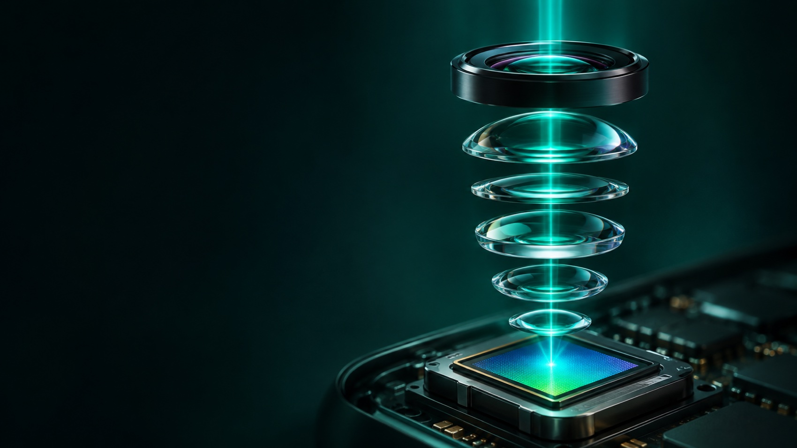
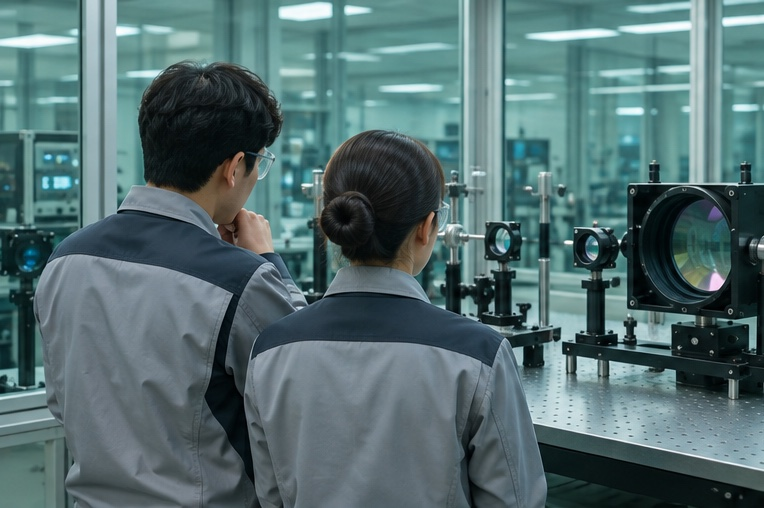
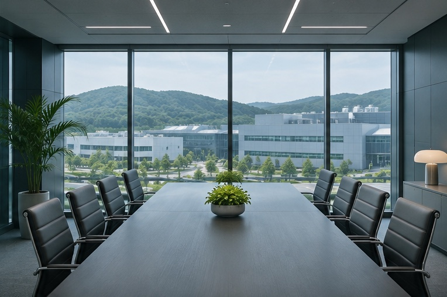
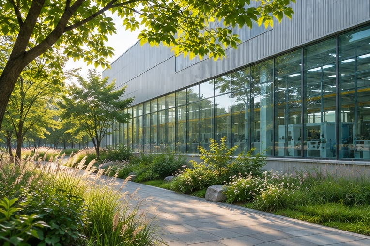
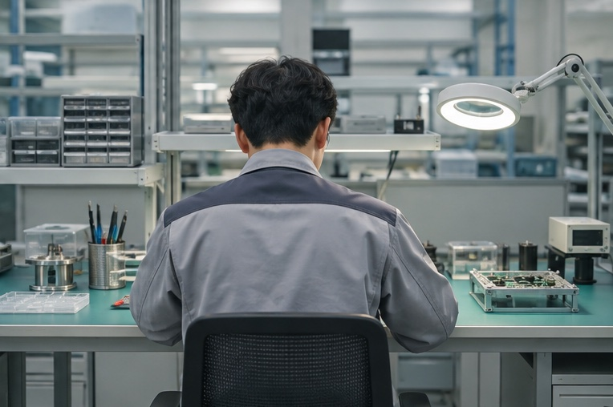

찾으려는 내용을 입력하세요.

일상과 산업을 잇는 정밀 영상 기술, 프리즘온.

모바일 기기 안에 들어가는 정밀 카메라 모듈을 살펴보세요.
생산 설비와 영상 데이터를 연결하는 산업 이미징입니다.

개발부터 생산 검토까지 이어지는 과정을 만나보세요.
일상의 장면을 담는 소형 광학 모듈입니다.
생산 설비에서 영상을 얻고 확인하는 구성입니다.

공시, 재무, 기업 자료를 한곳에서 살펴보세요.
프리즘온의 제품과 기술을 다루는 노트.
기술 노트
빛이 렌즈를 지나 영상으로 기록되는 과정을 살펴봅니다.
부품 위치, 조립 순서, 검사 기준을 정리합니다.
대상에 닿는 빛의 방향에 따라 보이는 형태가 달라집니다.
개발 기록으로 시제품에서 달라진 점을 찾습니다.
부품과 포장재의 사용 흐름을 정리합니다.

환경과 자원
사람과 현장
책임 있는 운영

정밀광학을 설계하고 생산하는 직무를 알아보세요.